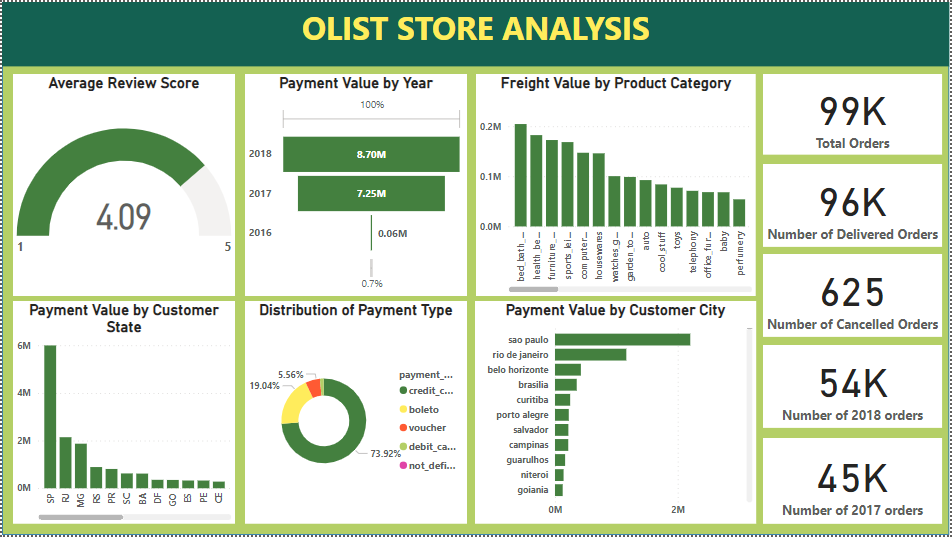
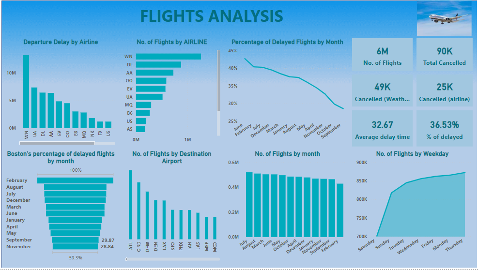
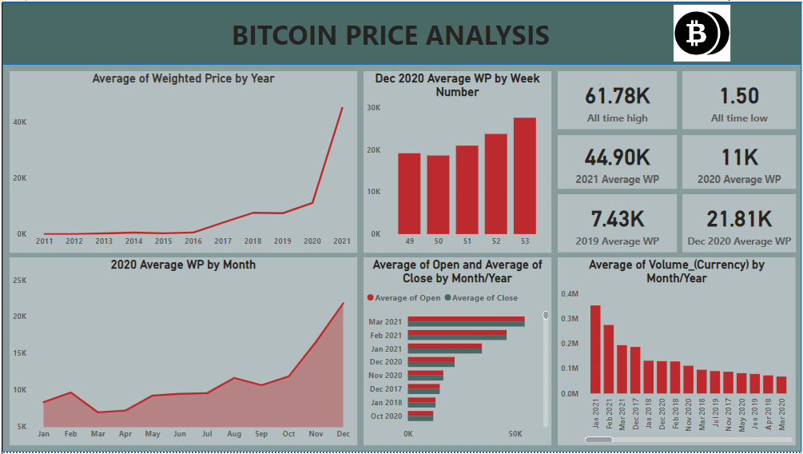
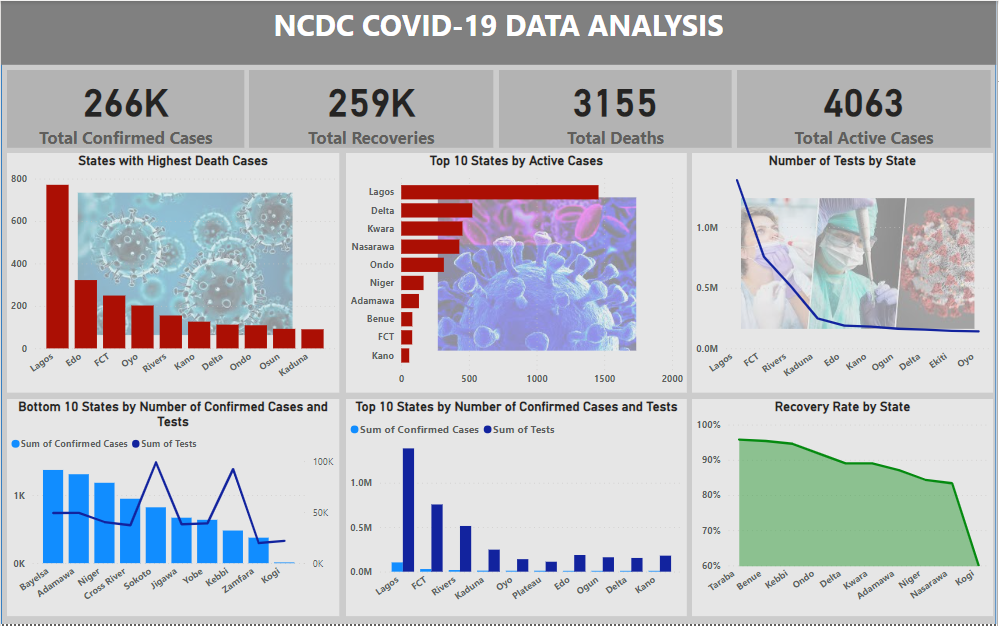

This European Soccer database contains more than 25,000 matches, 10,000 players,
11 European Countries with their lead championship, information on Seasons 2008 to 2016,
players' and teams' attributes sourced from EA Sports' FIFA video game series, weekly updates,
team line up with squad formation (X, Y coordinates), betting odds from up to 10 providers,
and detailed match events for 10,000+ matches. Questions on penalties, height and heading accuracy,
weight and jumping, balance level, finishing level, etc were answered.


This data set contains 113,937 loans with 81 variables on each loan, including loan amount, borrower rate (or interest rate), current loan status, borrower income,
and many others. I cleaned, analyzed, and visualized key insights.

The dataset I wrangled, analyzed, and visualized is the tweet archive of Twitter user @dog_rates, also known as WeRateDogs. WeRateDogs is a Twitter account that
rates people's dogs with humorous comments about the dogs.

This dataset analyzed has information of 100k orders from 2016 to 2018 made at multiple marketplaces in Brazil. Its
features allow viewing an order from multiple dimensions: from order status, price, payment and
freight performance to customer location, product attributes and finally reviews written by customers.

Having records for 5,000,000+ commercial airline flights in 2015, compiled for the U.S. DOT
Air Travel Consumer Report, I analyzed flight volume by month, percentage of departure delay,
average delay time, cancelled flights, etc.

I analyzed restaurant ratings in Mexico by real consumers from 2012, including additional information
about each restaurant and their cuisines, and each consumer and their preferences.

I analyzed the historical price of Bitcoin, the longest running and most well known cryptocurrency, first released as open source in
2009 by the anonymous Satoshi Nakamoto.

I visualized Covid-19 data as provided by The Nigeria Centre for Disease Control and Prevention as at November 18, 2022.

This dataset explored contains energy consumption information from 83 countries. I analyzed different metrics from various energy sources including coal, fossil fuel, solar, wind, etc.

I created a sales dashboard where there are dynamic buttons/slicers to view specific data for separate entities.

This is a collection of dashboards I've created on Tableau.